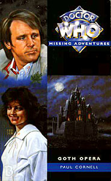

|
Goth Opera
|
BASIC PLOT DOCTOR COMPANIONS MATERIALISATION CIRCUIT Pg 178 Near Leek, Staffordshire. PREPARATORY READING CONTINUITY REFERENCES The Dedication is 'For Terrance'. Dicks, obviously. Pg 10 "'The Great Seal of Rassilon!' Shouted Ruath. Rassilon, or the things he owned, was first mentioned in The Deadly Assassin and appeared in The Five Doctors. He has had numerous brief cameos since, and any number of objects named after him. Pg 12 There is a flashback to the closing events of Blood Harvest. It's irrelevant, but the E-Space, Renault Espace joke, in practically the same breath, is good. Pg 14 In the flashback to Yarven's burial, the people involved clearly have faith, which works on Vampires in much the same way it does on Haemovores, as in The Curse of Fenric. "He will be entombed in a pit, not alive and not dead, on the world that will be called Ravolox." Ravolox became the name for Earth after the Time Lords had it moved from its original position, as revealed in Trial of a Time Lord. "He will be joined by a Prydonian Lady." This refers to Ruath herself. The Prydonian Chapter are a group that form part of the ruling council of the Time Lords, as established in The Deadly Assassin. Note the capitalization of the 'L' on Lady - it's 'Lady' as in 'Time Lady,' not as in 'woman'. Pgs 14-15 We hear about the Great Vampire's meeting with Rassilon. It seems this involved a conversation. The comment that the Vampire Messiah will be 'consumed in the maw of time' is analogous to the final fate of Rassilon as depicted in Timewyrm: Revelation: 'They say that you will devour the first and last of the Time Lords. That Rassilon will be crushed in your jaws during the last moments of the Blue Shift, the final inrush of matter at the end of the universe.' (Pg 65) Pg 15 "'That thing,' the bald man whispered, pointing back to the well. 'It's bigger on the inside than the outside.'" This quotes way back to An Unearthly Child and beyond, so much so that many of the books make a joke about the fact that people don't say it. Pg 18 "An Ice Warrior wouldn't be able to perceive any of you, you know." Ice Warriors appear in The Ice Warriors, The Seeds of Death, The Curse of Peladon, The Monster of Peladon, Legacy, GodEngine and are implied in Transit, amongst numerous other cameos Pg 20 "'By Rassilon, no.'" There seems to be a convention in this book - which is, to be fair, about faith - that, when someone wants to emphasize a point, they mention their equivalent of a deity. This comment shows that Ruath is a Time Lord, in the same way that, later, Nyssa's "By the Keeper" proves that she is from Traken. Pg 21 "When her Aunt Vanessa had been murdered by the Master..." Tegan contemplates the plots of Logopolis and Castrovalva, and concluded with an incredibly harsh description of the Fifth Doctor. To be fair, she is in a really bad mood. Pg 22 "If she'd never met him, she'd have had a career by now. She'd had the chance to go back and have a real go at it, but then he'd showed up again." Tegan left the TARDIS crew in Time-Flight (which turned out to be an incredible boon to Big Finish) and returned in Arc of Infinity Primo Levi's book 'If This Is A Man' is not a continuity reference at all, but I hugely recommend the book. Had to say that. "Why did the Mara have to be a bloody snake? She could picture it, she kept on picturing it around her brain." In a book that's all about possession, it's apt that Tegan keeps thinking of the Mara, and that's why the book is put in the 'gap' that it appears in (See also Continuity Cock-Ups). Tegan encountered the Mara in Kinda, and there was a re-match in Snakedance. Pg 23 "'We had ale on Traken'" Nyssa's home planet, seen in The Keeper of Traken, destroyed mere episodes later in Logopolis. "Nyssa began to play with her bracelet, a ring of Trakenite gold that she'd quietly taken to wearing after the death of Adric." In Earthshock. "About the Mara, I mean." Snakedance again. Pg 25 The Doctor has written an article for Wisden (a British cricketing magazine) entitled 'By Lord Cranleigh's Invitation, Seventy Years of Charity Elevens'. It was at Lord Cranleigh's that the Doctor played Cricket in Black Orchid, and he presumably wrote the book between Time-Flight and Arc of Infinity. Pg 26 "'We're in the quarter final tomorrow against Mike Gatting's side.'" Mike Gatting appeared, as a Doctor Who fan, particularly of the Fifth Doctor in the Documentaries 30 Years in the TARDIS (broadcast) and the video re-edit More Than 30 Years in the TARDIS. Pg 27 "Nyssa had never left Traken before the Doctor's future self, the Watcher, had appeared to spirit her away." Off-screen in Logopolis Pgs 27-28 "'I thought that the poms were soft, but you two -' Nyssa was staring at her. 'You thought that the apples were soft?' This is a joke based on the TARDIS translation circuits, which we heard about in The Masque of Mandragora. Strictly speaking, according to that latter story, the companions shouldn't know about it, but they've been mentioned so often in the books, that let's assume they do. There's also something quite odd (although quite satisfying) when you realize that Nyssa only ever hears Tegan speaking Trakenite. Pg 35 There is a potted history of Blood Harvest, including the destruction of the Great Vampire by sunlight, preluding the Vampire Messiah. Pg 36 Ruath also refers to her meeting with Romana in Blood Harvest. But see Continuity Cock-Ups. Ruath also mentions the Time Scoop, from The Five Doctors Pg 37 When Ruath gives her blood to Yarven, she tells her TARDIS 'Activate speed plasma drill, then full rejuvenation.' Some have suggested, given the Second Doctor's line in The Power of the Daleks, that his first regeneration was not an actual regeneration, but merely a return to his youth. This seems a deliberate (and welcome) attempt by Cornell to say that it's not, given that Ruath fully accepts that she has regenerated. Pg 38 Ruath, regenerated/rejuvenated: "Somebody dressed in a red velvet gown and long gloves. Her hair was different too." Rather gloriously, Ruath's clothes change with her in the TARDIS, exactly as happened to the Doctor in The Tenth Planet/Power of the Daleks. Pg 39 "'You have been treated with Numismaton gas, my Lord. Your body is awash with symbiotic nuclei.'" Planet of Fire and The Two Doctors respectively. Pg 41 There are references to the Master taking over the body of Nyssa's father, Tremas. The Keeper of Traken. Pg 43 "'You're worried about the Master?' 'No, I should think the Xeraphins took care of him.'" They didn't, of course, but the Doctor is working with what he knows from Time-Flight. "It's the Black Guardian that concerns me. Of late, I've been piloting the TARDIS to deliberate destinations such as this one quite often. The more I do that, the greater the chance that he'll launch some attempt at revenge." The Black Guardian appeared in The Armageddon Factor and is the reason that the Randomiser (removed in The Leisure Hive) was fitted to the TARDIS. The Doctor's concern here is justified: the Black Guardian will make his move in the next televised story post-Goth Opera: Mawdryn Undead, continuing on in Terminus and Enlightenment. Pg 44 "'A Haemovore.' Ruath smiled." Seen in The Curse of Fenric. The implication of what Ruath says here ('Step off the rock at your peril, for touches like that make the future fixed and destinies finite') suggests that once a Time Lord, or someone traveling with a Time Lord, enters a particular area of timespace, that is permanently defined. This is contradicted a number of times in both the programme and the BBC books, but was the basic principle behind all the Virgin novels. Furthermore, Day of the Daleks suggests that people from Earth cannot change the history of Earth unless someone external to that equation (such as the Doctor) is involved. Pg 45 "I am not this Agonal who was so easily tricked by the wiles of Gallifrey." Blood Harvest. Pg 46 "They'd done all right with the Doctor's zero cabinet back on Castrovalva." Castrovalva, obviously. Pg 48 Nyssa thinks about Traken. Again. Pg 50 "Tegan suddenly imagined a snake inside, roused ever so slightly, raising its head out of sleep with a wicked gleam in its eye." Tegan's infection by the Mara is seen in Kinda and Snakedance. Whilst Snakedance implies that Tegan is free of the Mara, this suggests that it will be always with her, or, perhaps, her memory of it will be. It may even be that Tegan has drawn from the Mara's strength and is now less susceptible to psychic attacks. Pg 53 "'Tell me, are you from E-Space?'" Reference to State of Decay (and the E-Space trilogy also encompassed Full Circle and Warriors' Gate). Pg 58 "'E-Space? Isn't that where Adric came from?'" Indeed it was, in Full Circle. Pg 59 A quick summary of State of Decay. Interesting to note that this book tries very hard to link everything back to State of Decay, including suggesting that Rassilon had wiped out all vampires except the ones we know about here. When the Doctor says,'I thought they were an isolated community, that Rassilon himself had wiped out all the original Undead. It seems that I was wrong.' He's absolutely right that he was wrong. There's a whole nother community in San Fransisco that has been in America for centuries. The Eighth Doctor will meet them in Vampire Science. Pg 63 "The old girl's getting old. I've been thinking of redesigning the console, actually..." The Doctor gets around to doing this after its near-total destruction in The Crystal Bucephalus, seen onscreen in The Five Doctors. Pg 71 Nyssa's still thinking about Tremas and the Master. Pg 79 OK, I have to mention it. There's a Sesame Street reference on this page. Pg 84 "I've lost one companion already this regeneration. I'm not about to lose two." Adric, in Earthshock. Pg 85 Nyssa's heart still belongs to Daddy. Pg 90 The Doctor mentions a number of his companions as people that he has faith in, much as he was seen to be muttering their names in The Curse of Fenric. Here he mentions Barbara and Ian, Susan and Adric. The Doctor says that Barbara and Ian married and had a child - Johnny Chess, who later, according to other Virgin books, married Tegan. Gosh, it's a small world. Pg 93 "On your way to your costume party, you were ambushed by the forces of evil." Happens to the Doctor all the time. I mention this because it's a lovely justification of the Doctor's fashion sense, which is generally (at least before the books) utterly ignored. Pg 96 More references to the Keeper and Nyssa being the last of the Trakenites. The Keeper of Traken. Pg 98 Nyssa contemplates the dangers of Ruath's slight timejump backwards when she went from Tasmania to Manchester. This refers, obliquely, to the Blinovitch Limitation Effect; basically, the shorting out of time differentials should two temporally displaced versions of the same person meet. The Blinovitch Effect was first mentioned in Day of the Daleks and came into force spectacularly in Mawdryn Undead. It's been a staple of many books since then. Pg 100 '"Because when Rassilon slayed the Great Vampire, he banished him to eternal darkness."' Whilst not strictly accurate (see Continuity Cock-Ups) the reference to eternal darkness could refer to E-Space, being smaller, having less stars than the Normal Universe. Pg 114 'When she'd found out the great secret of the Time Lord's future, she'd been reduced to inaction for days, as if a friend had died. As if all her friends had died...' This reference is explained later in the book, and ties in with the Virgin principle that Gallifrey exists in the ancient past of the Universe. The fact that Gallifrey does not exist now may be a result of The Ancestor Cell. 'The renegades must have discovered the secret in their adventures but none of them, not even Mortimus, had had the courage to try and change it.' Mortimus is the formal name of the Meddling Monk, seen in The Time Meddler and The Daleks' Masterplan as well as being the ongoing villain in the NA Alternate Universe cycle, appearing in its finale, No Future. Pg 117 This is a reprise of Ruath and Romana's meeting from Blood Harvest. But see Continuity Cock-Ups. Pg 118 "Romana popped her head back into the hospitality area. 'One lump or two?' 'Erm, lump of what?' 'Tea.'" This is a resprise of a joke from Shada, where Professor Chronotis asks 'One lump or two?' and goes on to ask 'Sugar?' Its appearance here, suggesting that Gallifreyan tea comes in lumps, appears to explain Chonotis' rather strange beverage-making skills. Romana chats about the events of Blood Harvest. Pg 119 '"In a certain volume of R.O.O. stories -" "Do you mean Rassilon, Omega, Other or A.A. Milne?"' Rassilon stretches back to The Deadly Assassin and has appeared numerous times in various incarnations of Who (The Five Doctors on screen, The Divergence sequence in the 8th Doctor audios and in The Eight Doctors and Blood Harvest amongst other books). Omega appeared first in The Three Doctors and later in Arc of Infinity and The Infinity Doctors. The Other, a kind of, sort of earlier version of the Doctor appears (shadowlike) in a number of books. Their relationship is explained in Lungbarrow. The ROO texts are mentioned on page 154 of The Infinity Doctors. The A.A. Milne joke is actually quite good. Pg 120 "'Now, the owl is of course a bird associated with Rassilon.'" It's also associated with Paul Cornell, as owls appear in all four of his first 'sequence' for the NAs: Timewyrm: Revelation, Love and War, No Future and Human Nature. "If you're talking about Bernice". Bernice 'surprise' Summerfield, was, of course, the Seventh Doctor's companion through most of the NAs. Pg 121 "The vaporization orders for Elar, Morin and Rath." The three Time Lords mentioned were among the villains in Blood Harvest. Vaporization itself as a Time Lord punishment is effected on the Doctor (but it doesn't kill him) in Arc of Infinity, and is seen in practice on the War Lord and his cronies in The War Games. "Not every companion of this wild adventuress was going to stick a weapon in his ribs." Ace did exactly that in Blood Harvest. Pg 123 "It had become host to a number of Time Lord heirlooms carrying the tag 'Of Rassilon'." Items bearing this tag include the Seal of Rassilon (The Five Doctors), the Sash of Rassilon (The Invasion of Time) and the Rod of Rassilon (also The Invasion of Time) amongst numerous others. Only the Hand of Omega escaped this particular naming convention. The room that Romana is taken to here was seen in The Five Doctors Pg 125 'Spandrell slapped his thigh brutally.' It is possible, though unlikely, that Spandrell's action here foreshadows Cornell's later in interest in the genre of pantomime, as evidenced in Oh No It Isn't! 'It was like she had grabbed the tail of some fast-moving bird, an owl perhaps!' Cornell's sense of self-mockery allows him to note here that he has perhaps overused the owl metaphor. The Game Room from The Five Doctors appears, with mentions of the Time Scoop, the Death Zone and the Dark Tower and the famous 'Winner shall lose' quote also gets a name-check, slightly misquoted this time (though that may be an alternative translation from Old High Gallifreyan). Pg 126 '"You got so old, Theta!"' Theta Sigma was the Doctor's nickname at the Academy, due to the grades he got, as revealed in The Armageddon Factor. Ruath refers to the Doctor several times by this name in the course of the book. 'She spun a dial and the picture swirled through many times and adventures, the image of the Doctor changing several times. Ruath stared at the final image. 'So that's what you become!' she gasped. Alien Bodies suggests that, by the time of the death of the Thirteenth Doctor, his bio-data has been spectacularly altered. 'Ruath knew that it was forbidden, and thus generally impossible, for Time Lords to meet each other out of temporal sequence.' The Doctor mentions something similar in Legacy of the Daleks, which upset many folks in fandom, although its appearance here seems not to have done. It's a rule (as Pg 133 makes clear) and not a physical fact, though. "And I certainly wouldn't want to take on the Ka Faraq Gatri..." This moniker for the Doctor was invented by Ben Aaranovitch in the novelisation of Remembrance of the Daleks and was used through many of the NAs to refer to the Seventh Doctor. It has been translated as 'The Oncoming Storm' in general, although the short story Continuity Errors (Decalog 3) suggests that its actual translation is 'Nice guy - if you're a biped'. Ruath monitors the Doctor's TARDIS as it travels from Castrovalva to Four to Doomsday, Deva Loka (Kinda), Earth several times (The Visitation, Black Orchid, Earthshock), to Gallifrey (Arc of Infinity), and then Manussa (Snakedance). This neatly tracks the Fifth Doctor's adventures. It's a tad unfair of Cornell to do this, as it seemingly disallows any other MAs or PDAs of audios to occur during the time period. Presumably Ruath is just looking at a few entries rather than all of them. Pg 128 "I was thinking of having the Presidential Chambers redecorated anyway. All that lead." The Doctor had them done up in such a style in The Invasion of Time. He had good reason. Pg 129 "Romana stared up at the Drashig." Carnival of Monsters. Pgs 131-132 "Sabalom Glitz rubbed his hands together joyfully, grinning at his latest prize. The hold of the Nosferatu (technically the Nosferatu 2, but Dibber couldn't get his tongue round the name, resulting in a number of embarrassing communications problems) was a dank and dripping place, but somehow it was right for the object that Glitz was staring at with such delight. 'A miniscope,' he purred. 'And that old fool thought that the crate just had a load of tinned fruit in it. Grotzi city, here we come'" Some kind of award, perhaps, should be given for the most continuity references possible in a paragraph and a bit: Sabalom Glitz appeared in The Trial of a Time Lord (first and last segments) and Dragonfire, and in both cases, Grotzi was his currency of choice. Dibber was his assistant and compatriot during his first appearance but possibly shouldn't be here now (see Continuity Cock-ups). The Nosferatu was Glitz's original ship, destroyed by Kane in Dragonfire, and replaced by the Ice City, renamed by Glitz as the Nosferatu 2. Miniscopes appeared in Carnival of Monsters. Pg 132 "The individual environments were held in chronic hystere-chronic hyst-time loops." A chronic hysteresis was something that the Doctor and Romana became trapped in during Meglos. It is also the technical term for the visual feedback process used to create the first Doctor's theme sequence. "With catlike grace, he lowered his arms from the killing Venusian Aikido position they'd automatically adopted." Glitz knows Venusian Aikido (it seems unlikely, but he always was a bit of a dark horse). The major proponent of this was the Third Doctor, but others have been known to use it here and there. "A draconian fiefdom" Draconians first appeared in Frontier in Space. They have made numerous novel appearances, including Catastrophea and Warmonger amongst others. Pg 133 "Romana stared deep into the swirling fractal patterns on the surface of her tea and concentrated on the idea of the Doctor's fifth incarnation." Interesting that Romana should be considering fractals as well as the fifth Doctor. In Timewyrm: Revelation, the part of the Doctor's mind that was represented by the fifth Doctor was seeking a perfect fractal flower, always just beyond his reach. Pg 134 "Behind them was a glittering new Type Ninety TARDIS." Noting that this is in the Seventh Doctor's time frame on Gallifrey, but we're not all that far from the Type 102 (also known as Compassion) seen in The Shadows of Avalon. Pg 135 "Now, Lady Romana, since you've been through so much in the service of Gallifrey, I was wondering if you'd be interested in a seat on the High Council." Again, as in Blood Harvest, this sets up Romana's eventual elevation to president and, eventually, to the destruction of Gallifey as seen in The Ancestor Cell. It also suggests that Gallifreyan politics relies much more on who you know than what you know. Pg 138 "The Time Lords? What, are they going to pile in and help us since you knocked off Omega for them?" Charmingly put, this occurred in Arc of Infinity. Pg 143 "'If only I had the ion bonder,' Nyssa murmured to herself." The ion bonder appeared in Castovalva, being used to build the Doctor's Zero Cabinet. It's also the subject of a gleeful entry in The Completely Useless Encyclopaedia. Pg 145 "Tegan sat down beside the boy and, remembering her training concerning difficult passengers..." We all know Tegan was an air hostess, but it was made abundantly clear in Logopolis and Time Flight. Pg 148 "She was even familiar with some of the individual components from her recent adventures on the Time Lords' home planet." Arc of Infinity Pg 159 "Newton would have appreciated the nature of that experiment." The Doctor mentions Newton numerous times but it is only in The Pirate Planet that he confirms that he actually met him. Pg 175 The conversation between Tegan and the Doctor makes it clear that the Doctor still feels guilt over Adric's death. This occurred in Earthshock. Pg 176 The Doctor destroys the TARDIS hatstand in order to make stakes. He must replace it at some point, because he later bludgeons someone to death with it in Time of Your Life, despite it getting left behind on Frontios. Perhaps he should get a different piece of furniture. Pg 177 "The familiar wheezing, groaning sound vibrated from the console." A nod to the Terrance Dicks Target novelisations and possibly related to a similar comment in Blood Harvest. Pg 181 "[Vampires are] the sort of beast that the Black Guardian delights in" The Doctor is concerned about the Black Guardian at the moment, showing possible prescience given that said Guardian is about to turn up again in Mawdryn Undead, Terminus and Enlightenment. Pg 182 '"There are times," he murmured, "when I rather miss the sonic screwdriver. I really must get around to making another one."' The sonic screwdriver was destroyed in The Visitation. He later has one in The Nightmare Fair and The Pit, so presumably he eventually gets around to making another. Pg 183 "'Ready? When I say run...' He turned the key. 'Run!'" The Second Doctor's catchphrase. "I'll explain later." Normally I'd comment that this was the Doctor's catchphrase in The Curse of Fatal Death, but this book predates it. It turns out that sometimes the Doctor really does have to explain later. Maybe I shouldn't be so harsh on the phrase. Pg 189 "A blank room. For a moment, Tegan thought that it might be a Zero Room." From Castrovalva. Pg 195 The Doctor and Ruath reminisce about their time at the Prydonian academy, mentioning Mortimus, the Rani and Magnus (the Master, I think) as well as their teacher, Borusa. Mortimus, the Meddling Monk, appearing in The Time Meddler and The Dalek Masterplan, although the Doctor failed to recognize him in the first instance (lending credence to a popular fan theory that the First Doctor was an amnesiac). The Rani appeared in The Mark of the Rani and Time and the Rani. I don't need to tell you who the Master is. Borusa first appeared in The Deadly Assassin and then all stories set on Gallifrey until his entombment in The Five Doctors. Pg 196 "You know that TARDISes are prevented from entering what the Minyans call the Constellation of Kasterborous after a certain date. At the point where we stand there is no sign of there being an active Gallifreyan civilization." Minyans appeared in Underworld, Gallifrey being in the constellation of Kasterborous was first referenced in The Brain of Morbius. The lack of a Gallifrey in the current Earth time (Humanian era, presumably) is possible down to the fact that the Doctor destroyed it in The Ancestor Cell. Alternatively, although there is 'no sign' of Gallifrey, it doesn't mean it's not there. Pg 202 Ruath calls the Doctor 'Theta' again. The Armageddon Factor. Pg 203 "In reality, I've always seen you more as... what's a good analogy? A pet. Like an affectionate dog or a cat."' says the Doctor to Tegan. This dismissal of a companion is rather Seventh Doctorish, reflecting, subtly, what he would later say to Ace in The Curse of Fenric. Pg 207 "Do you know, we even once electrified Borusa's Perigosto stick?" First mentioned in The Green Death. Pg 210 Symbiotic nuclei are mentioned again. The Two Doctors. Pg 228 "If you want to be free of this curse, Theta, you're going to take this TARDIS of yours back to the Dark Time." Theta, as before, references The Armageddon Factor. The Dark Time, when Time Lords were cruel and selfish, is considered in The Five Doctors. Pg 230 "Nyssa was standing at the console. The door activation lever was in her hand. 'Forgive me.' She pulled the lever. The doors of the TARDIS opened into the Vortex." This has reflections of the death of Salamander as seen in The Enemy of the World. Pg 231 "She spiraled away into the butterfly corridor of the Vortex, screaming: 'The winner shall lose and the loser -'" The Five Doctors legend again, although what a bizarre set of last words. Pg 232 The story that Romana is telling refers to the fact that, above Gallifrey, Omega 'made a new sun', referring to the Supernova that Omega originally harnessed to give the Time Lords the power of time travel. The Three Doctors. The story goes on to reference Minyans (Underworld) and Bow-Ships (State of Decay, Blood Harvest). And it turns out that Romana is talking to Time Toddlers, which is presumably another phrase for the Time Tots mentioned in Shada. Pg 233 "He handed Romana a cricket ball." Pretty much the Fifth Doctor's calling card. Also there's a glorious use of the Chameleon Circuit on this page. Pg 236 "I wonder if he'll appreciate Rutan Pobulas?" The Rutans were frequently mentioned for their ongoing war with the Sontarans in various television episodes, and it's a mainstay of the plot in The Infinity Doctors. A Rutan appeared in Horror of Fang Rock. It does seem unusual, though, that a race with only one mind controlling it, and dedicated to conquest, should actually require a form of currency. Pg 237 "The Doctor and his friends were on their way to another adventure." This pastiches the end of a number of Target novelisations written by Terrance Dicks, as does the description of the TARDIS dematerializing with 'a wheezing, groaning sound'. See also Blood Harvest. OLD FRIENDS AND OLD ENEMIES Ruath, from Blood Harvest. Yarven, the Vampire Lord, also from Blood Harvest. Haemovores make a brief cameo appearance. Secretary Pogarel re-appears, once again from Blood Harvest. Castellan Spandrell. Sabalom Glitz. NEW FRIENDS AND NEW ENEMIES Victor Lang, a Billy Graham clone with a penchant for sexually abusing his
daughter. There is a certain cynicism going on here, methinks.
CONTINUITY COCK-UPS PLUGGING THE HOLES [Fan-wank theorizing of how to fix continuity cock-ups] FEATURED ALIEN RACES FEATURED LOCATIONS Croatia/Bosnia (disputed territory), 1993 Tasmania, 1993 (a few weeks later - Ruath goes backwards in a time a little when she returns to Manchester. I have assumed that all the Manchester sequences are in the same time frame) Earth in a possible future (related to The Curse of Fenric), unknown time A castle, near Leek in Staffordshire, that's actually Ruath's TARDIS Alderley Edge, near Manchester Gallifrey, after the events of Blood Harvest An unnamed planet with (at least) two suns. IN SUMMARY - Anthony Wilson |
|
 |